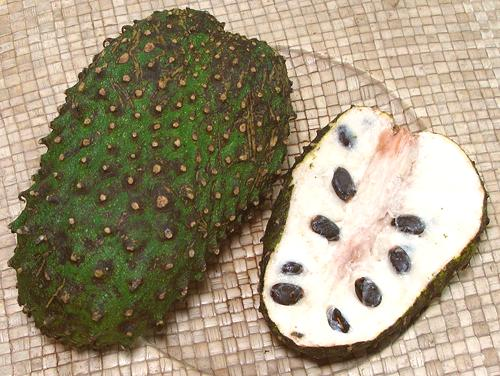

Soursop

[Guanabana (Spanish); Graviola (Brazil); Annona muricata]
Native to the West Indies, soursop is now the most grown Annona
throughout the tropics. The fruits are relatively large, up to 12 inches
long and 6 inches in diameter, thin skinned and covered with tiny spines
which rub off easily. The larger photo specimen was 6 inches long, 3-3/4
inches diameter and weighed 6-3/4 ounces.
Most soursop is processed into ice cream, sherbets and beverages. The
flesh is a trace fibrous and there are a lot of seeds, but the flavor is
intensely floral and quite enjoyable. It has been described as like
Strawberry and Pineapple with notes of Citrus and Coconut or Banana.
The fruit has a sweet-sour balance similar to Tamarind.
More on Annonas.
Buying:
Fresh Soursops have just started to appear
in markets in Southern California, but at a very steep price. The
photo specimens were purchased for 2016 US $11.99 / pound. I have
also bought whole frozen soursops from the feezer cases of a large
Philippine market in Los Angeles (Eagle Rock) but they are not as
pleasant as the fresh ones. I have also purchased Soursop canned in
syrup which was quite nice, but I haven't seen it for years.
Ripening:
If they are hard, they can be set out on
a counter for a few days. They are ripe when they have just a little
give, similar to a green Avocado. They can be eaten with a spoon.
Health & Nutrition:
Vitamins:
Soursop has significant amounts of
Vitamins C, B1 and B2, and Minerals Magnesium, Phosphorus and
Potassium.
Neurotoxin:
Soursop seeds contain Annonacin, a
degenerative neurotoxin which produces a form of Parkinsons disease.
It is still unknown if the flesh contains annonacin sufficient to be a
problem for people who consume soursop regularly. Further study is
indicated.
Cancer:
"Health Food" businesses are selling Soursop
capsules under the name "Graviola" as a cure for cancer. There isn't
the slightest trace of any scientific or medical evidence that Graviola
capsules have any anti-cancer activity (Memorial Sloan-Kettering Cancer
Center, Cancer Research UK, U.S. Federal Trade Commission). On the other
hand, no large scale human trials have been performed, so the claims
have not been rigorously disproven, however unlikely they may be.
Seed Oil:
Soursop seed oil has traditionally been used
for many medicinal purposes, and is used in lotions to relieve various
skin disorders.
ca_sourz* 160424 - www.clovegarden.com
©Andrew Grygus - agryg@clovegarden.com - Photos
on this page not otherwise credited © cg1
- Linking to and non-commercial use of this page permitted